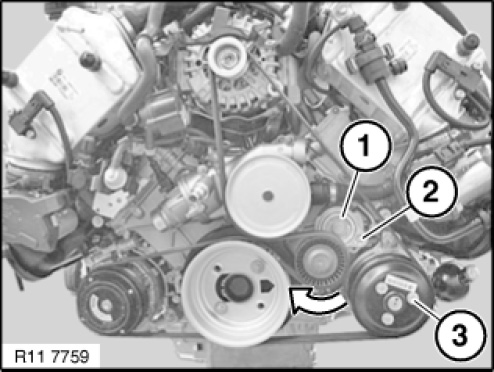

Drive Belt: Service and Repair
11 28 010 Replacing drive belt for alternator (S63T)
Special tools required:

IMPORTANT: If contaminated with hydraulic fluid: Replace drive belt.
Installation note:
If the drive belt is to be reused, mark direction of travel and reinstall drive belt in same direction of rotation.

Necessary preliminary tasks:
- Remove fan cowl
- Release expansion tank for charge air cooler from bracket and press forwards
Coolant hoses do not need to be released.

IMPORTANT: Belt tensioner is under high initial spring tension.
Pre-tension belt tensioner (1) in direction of arrow with tool (2).
Insert special tool 11 0 390 in dowel hole.
Remove drive belt.
Graphic N63.
Installation note:
Make sure drive belt is in correct installation position.

Assemble engine.